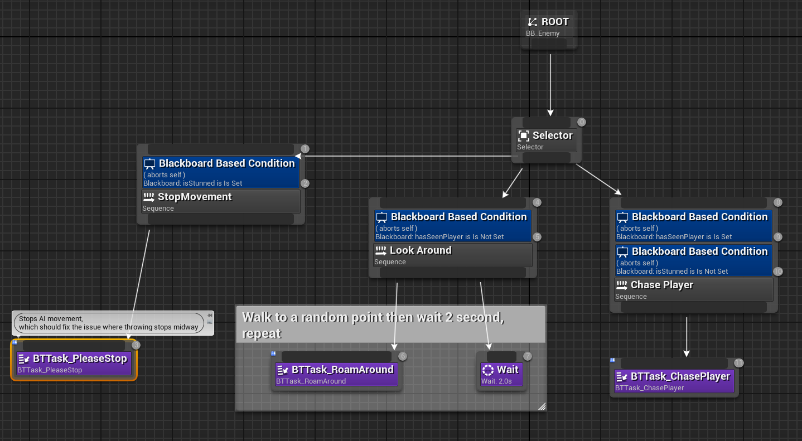
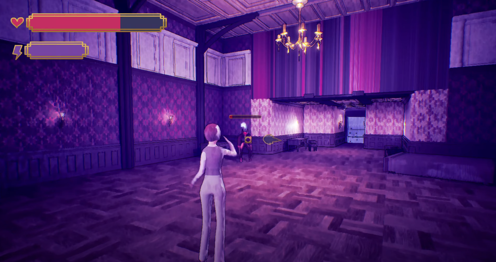
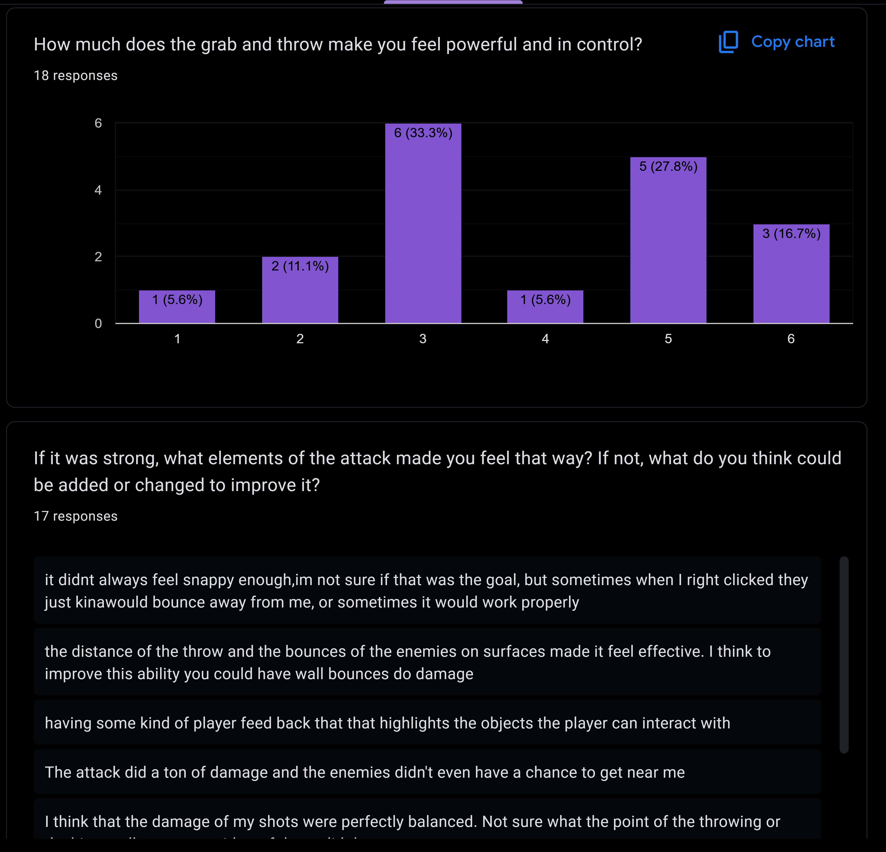

Liminal Detective
The demon's heir has been murdered, and there's only one person who can solve the case... Play as Maira, a half-demon investigator trying to solve the murder of her estranged brother Joseph in this beautifully rendered, action-packed third-person mystery game.
Contributions
This project I mainly focused on combat programming which included but not limited to: enemy ai, player abilities, and combat balance. For the duration of this project I collaborated with two dedicated combat designers to implement features.
Player Abilities
As Maira you are the half sibling to a full demon making you a half demon yourself. When designing the player’s abilities we wanted to make the player feel like they were channeling unearthly powers to defeat enemies. The player’s abilities consist of a quick dash that grants you a short duration of invincibility, a ranged attack that marks enemies hit, an attack that consumes all marks and deals damage to all marked enemies while stunning them for a short duration, a grab attack that works on enemies and items scattered around the mansion, and a throw attack that can knock all enemies hit back. These abilities work together to create a dynamic and fluid gameplay experience.
Ranged Attack
The ranged attack consists of the shooting, marking enemies, and recalling projectiles. The full order of the attack allows the player to shoot 3 projectiles marking any enemies hit. After the player has fired 3 projectiles they need to press the shoot button to recall projectiles from the marked enemies. Doing this will deal additional damage to marked enemies and spawn projectiles from the marked enemies that fly towards the player dealing damage to any enemies hit.

Grab and Throw
The grab and throw allows the player to pick up enemies and furniture to throw around. To grab an object the player first needs to be within a certain range of it. When the player is in range they can pick up that object, if the object is an enemy then the enemy is stunning and cannot move or attack. The player can only hold the object if they have stamina and will drop the held object when they run out.

Player Ability Challenges
One of the biggest challenges when implementing the player’s abilities was the interactions with the enemy AI. For example, initially when grabbing enemies the held enemy would still attack the player and when thrown/dropped would not continue its behaviors. To combat this I implemented a way for enemies to pause its behaviors when held and continue when thrown/dropped. Another challenge was the complexity of the ranged attack. During the early sprints we had more than one ranged attack which confused many playtesters and teammates alike. We cut and combined the abilities into what the ranged attack is today.
Enemy AI
The enemy AI was built using Unreal Engine’s blackboards. The AI has 3 simple behaviors that allow it to wander around, chase the player, and attack the player. Although it may seem simple, enemies with just these 3 behaviors can be challenging to fight. The AI will wander around until they spot the player or take damage, when either of these happen the enemy will start chasing the player. When the enemy is within range of the player it will transition to the attack state and deal damage to the player. The attack and chase state will run simultaneously to allow the enemies to move while attacking.

Boss
At the end of the game you fight your brother’s killer who takes the form of a giant demon. This boss was created with the base enemy and has all the characteristics of the regular enemy with more abilities. The boss can periodically spawn in more minions/enemies to aid it in its battle against Maira. The boss cannot spawn more than 12 additional enemies to avoid cluttering the battle and making the fight too hard.

Combat UI
In addition to combat programming I also implemented the UI needed for all combat features. This includes the player’s HUD, enemy health bars, and tutorial popups. The final UI implementation was greatly influenced by testing feedback from the GTL that allowed us to create a visually pleasing and readable UI.

Balancing
For our project we wanted to hit a sweet spot of challenging and engaging for our combat. To achieve this goal our team went to the game testing lab (GTL), twice a week starting in sprint/week 5. At the GTL we were able to have other students playtest and give feedback on our game build. With this feedback me and our other combat designers were able to iterate on player and enemy stats, enemy ai behaviors, visual clarity, and much more.

Documentation
Every good game needs a lot of documentation to stay organized. Our team stayed on top of things by making sure each necessary document was updated each sprint. The main document I managed, along with another programmer, is the technical planning document. This document contains all the information a new developer would need to be onboarded onto our project.
Technical Plan Document